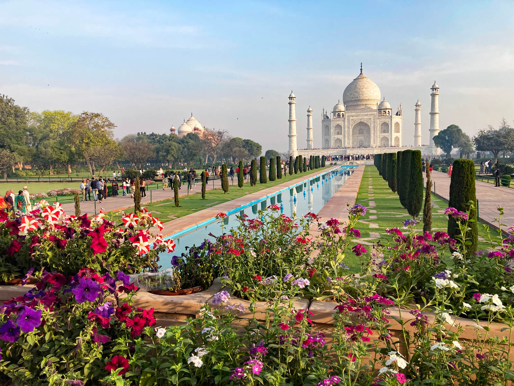
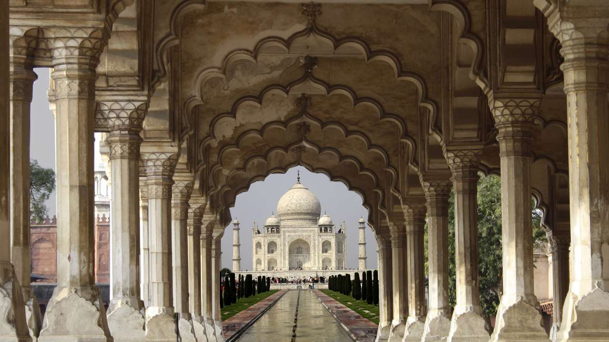
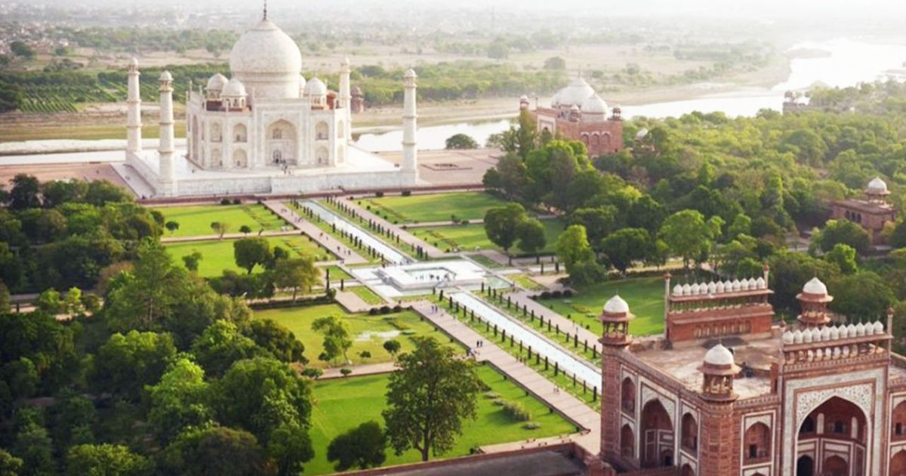
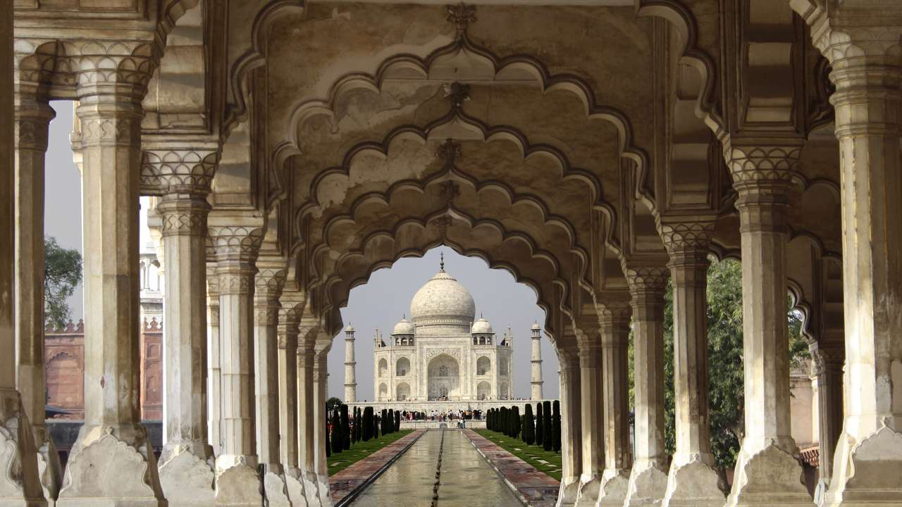
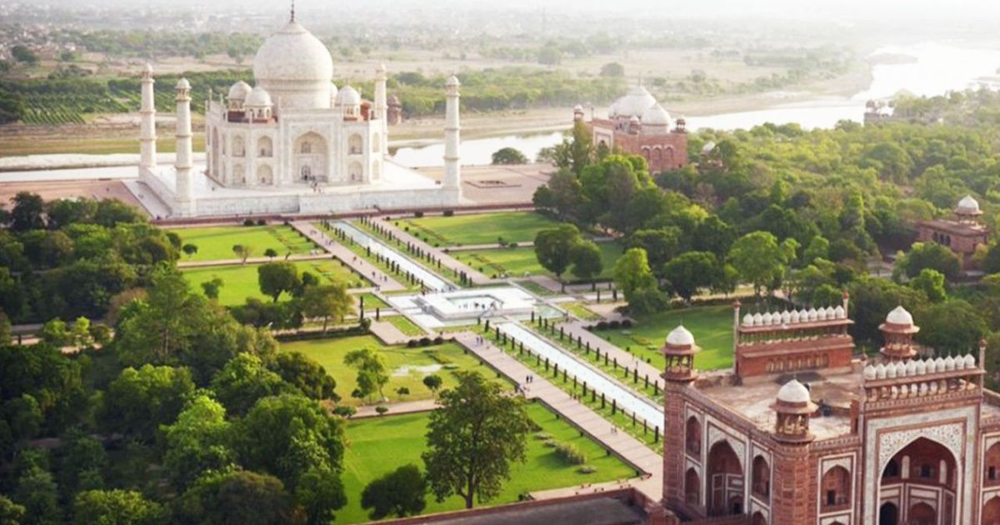
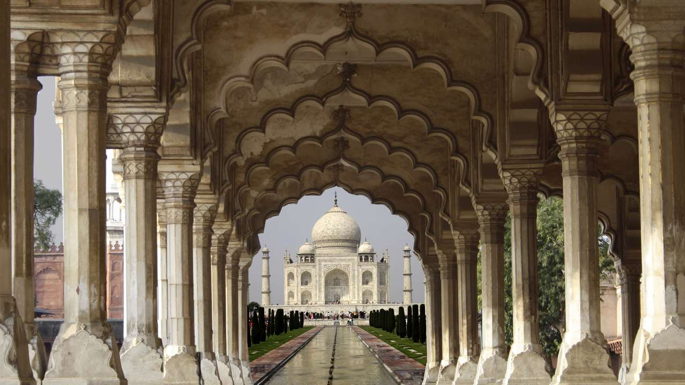
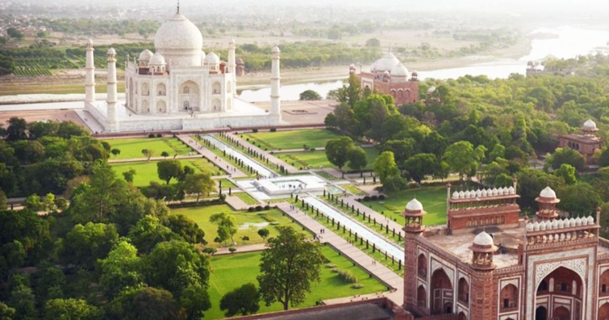
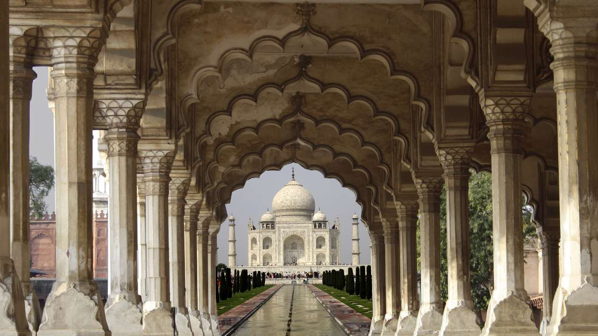
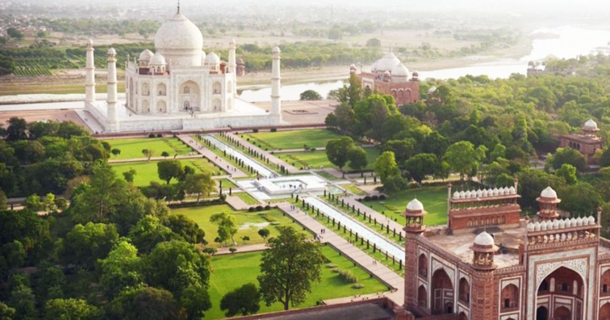

Photo Gallery

 





Who could ever think that an eternal love leading to the saga of infinite bondage can evolve out of a desert like land and would blossom to be the reason to gift our world a poem-in-marble, The Taj!
No image of The Taj, neither on canvass nor on celluloid, can adequately express its conceptual imaginary nor convey the legend, the poetry and the romance that shrouds what Rabindranath Tagore calls "a teardrop on the cheek of time".
The Taj Mahal, a spectacle in white marble, unparalleled in grandeur that depicts the sheer opulence of an era. The awesome structure, the monument of love that Mughal Emperor Shah Jahan gave to the world, stands as a testimony of his intense love for his wife Mumtaz Mahal.
It is a romance celebrated in marble and glorified with precious and semi-precious stones and that’s the way to appreciate it!
Uttar Pradesh, the Land of The Taj is rich in its cultural heritage and has always been a prominent arena of politics since the ancient times. Agra, the City of The Taj and once the capital of the Mughal Empire during the 16th through the early 18th centuries, enjoys a close proximity to the National Capital City of New Delhi.


| Location | Uttar Pradesh | ||||||||||
| Timings | 30 mins before sunrise to 30 mins before sunset;closed on Fridays | ||||||||||
| Entry Fee | RS50 for Indians,Rs1100 for foreigners, Rs540 for citizens of SAARC & BIMSTEC countries,free for children below the age of 15 | ||||||||||
| Night Entry Time |
|
||||||||||
| Still Camera | Free,but photograpy prohibited inside the main mausoleum | ||||||||||
| Status | UNESCO World Heriatge site | ||||||||||
| Architect | Ustad Ahmad Lahauri | ||||||||||
| Material used | A Blend of Islamic,Persian,and Indian Architectal styles | ||||||||||
| Cost of Construction | 32 million rupees | ||||||||||
| Area | 42 acres | ||||||||||